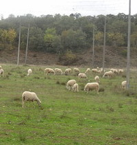

Sobre a Quinta
Informação histórica da quinta.
-

Século XIII
A origem do nome da Quinta
O nome da Quinta é citado já em 1258 nas Ordenações Afonsinas. É formado pela combinação de Rica com Fé. Dona Rica, filha do duque da Polónia foi rainha de Castela (de 1152 a 1157). Santa Fé de Agen que é venerada na Abadia de Conques, nos Pireneus Franceses
-

Século XIII - Século XV
Tradição em Agricultura e Pecuária
Cerca de 1225 os Monges Cistercienses da Granja de Moreiruela, em Zamora, adquiriram esta Quinta para produção própria de bens alimentares, criação de ovelhas e introduziram a melhoria do uso da água e a utilização agroflorestal sustentável. Esta compra terá sido patrocinada pela Infanta Teresa Sanches de Portugal. Administraram a Quinta e muitas outras que possuíam nos concelhos de Bragança e Miranda do Douro, durante 200 anos.
-

Século XVI - Século XVIII
Padres Jesuítas
Em 1571 os Padres Jesuítas obtiveram autorização régia para comprarem esta Quinta a particulares, para produção própria dos bens alimentares, criação de ovelhas. Era também utilizada como residência de fim de semana dos professores de Colégio Universitário de Jesus que tinham na cidade de Bragança. Construiram uma fonte de granito em 1742. Administraram a Quinta durante 200 anos, até 1759, quando abandonaram Portugal após a perseguição movida pelo Marquês de Pombal
-
Século XVIII - Século XXI
Actuais donos
O Rei repartiu as suas propriedades em diversas Quintas, tendo esta sido adquirida pelo sexto avô dos atuais donos, em 1780, em hasta pública. Desde essa data tem estado na posse da Família.
-

Século XX - Século XXI
O lúpulo
Em 1960 foi iniciada a cultura do lúpulo para o fabrico da cerveja e progressivamente instalados 6ha, as condições de mercado determinaram o abandono da cultura no ano 2001.
-
Venha
visitar-nos